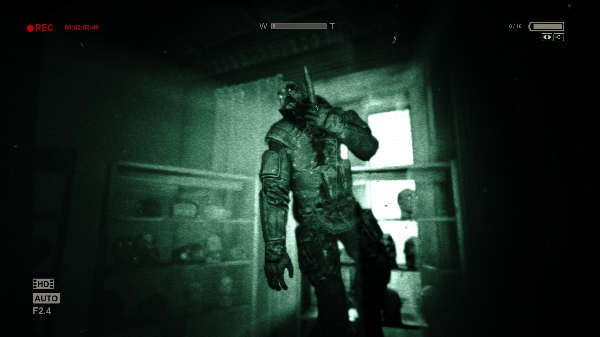

За что так известна игра Alien: Isolation?
За создание умного и хитрого ИИ, который обыгрывал игроков
За хорошо переданную атмосферу ужаса и одиночества на брошенном корабле
За интересные геймплейные механики, которые могли использоваться везде
И правда!
Эта игра моментально шокировала и очаровала игроков самым продвинутым ИИ антоганиста - Чужого. Он с вами играется. Он понимает, что вы бросили вещицу в сторону, чтобы отвлечь его, поэтому он пойдёт в сторону, откуда эта вещица была брошена. Он знает, что вы находитесь где-то рядом и обойдёт все закоулки и углы. Не смотря на его слепоту, его слух чёток и чуток(нажмите сюда, чтобы продолжить)
Из игры Outlast кого Майлз Апшер боится больше всего?

Криса Уокера
Ричарда Трагера
Трупа солдата
Странный вопрос. Необычный ответ.
Из всех врагов в Outlast Майлз боялся Криса Уокера, но больше Ричарда Трагера, первый сбросил его со второго этажа на первый и преследовал всю игру, а второй отрезал ему два пальца, за что, собственно, и поплатился смертью в лифте. Это можно заметить по его дыханию при встрече с ними. C первым он гораздо напряженнее дышит, со вторым почти кричит.(нажмите сюда, чтобы продолжить)
Какой факт про Dead Space является верным?
Эта игра была запрещена в Китае и Японии из-за чрезмерного насилия игры с участием, несколько расчленений, которые игрок может выполнить на врагов
Чтобы создать некроморфов(врагов игры), создателям пришлось смотреть фото мёртвых козлов, чтобы реалистичнее воссоздать монстров
Молчаливый главный герой (персонаж игрока) Айзек Кларк назван в честь двух писателей-фантастов, Айзека Азимова и Артура Кларка
Слишком очевидно? Слишком мило
Так разработчики решили отдать дань уважения людям, которые внесли огромный вклад в фантастику!(нажмите сюда, чтобы продолжить)
Какая самая коронная фраза Крика?
"Не бросай трубку!"
"Тебе нравятся фильмы ужасов?"
"Привет. Кто ты?"
Раз за разом, но не надоедает
На протяжении 4-х фильмов Крик произносит эту фразу в телефоне, каждый раз, звоня своей новой очередной жертве(нажмите сюда, чтобы продолжить)
Ты победил пирожок на полке, молодец